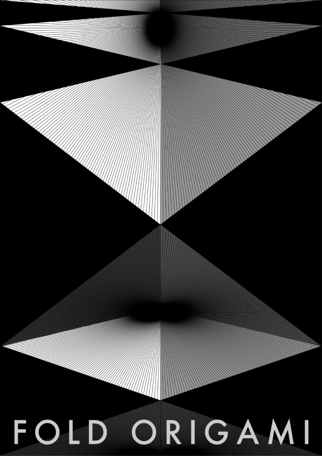
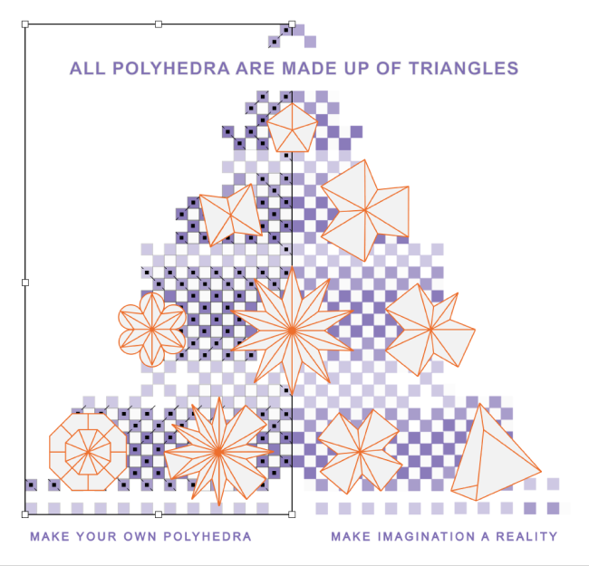

Project
Contact
@0.0oyo
Designer
Shape Research
김예은
ORIGAMI
Category
Shape Poster1 / Shape Poster2 / Shape Poster3
종이접기는 단 한번의 접기로 평면과 입체를 아우르는 재미있는 놀이입니다.
평면이 입체가 되기 위한 필수 도형
‘삼각형’ 을 가지고 포스터를 제작해 보았다.
RISE
FOLD ORIGAMI
DIGITAL ORIGAMI
Poster
Poster
Poster
X축과 Y축으로만 이루어진 좌표평면에서 Z에 점 하나가 찍어지면 그 점과 연결되는 무수한 선이 생겨 입체물이 되고 그 단면은 필연적으로 삼각형이 될 수 밖에 없다.
일상에서 볼 수 있는 종이접기의 흔적들
이러한 구조는 사면체의 피라미드처럼 보일 수도 있고
단단한 다리의 트러스 구조처럼 보일의 수도 있으며
접혔다 펴지는 아코디언의 옆모습처럼 보일 수도 있다.
색종이 크기로 제작된 디지털 종이접기의 화면 책자.

